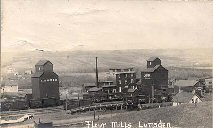
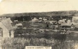
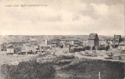

|  Lumsden Saskatchewan Flour Mills c1910 |
 Lumsden Saskatchewan c1906 |
 Lumsden Saskatchewan Birds Eye View c1907 |
|
Lumsden is located in the heart of the Qu'Appelle Valley, 19 miles northwest of Regina. The Canadian Pacific Railway selected the town site in 1881. Lumsden was incorporated as a village in 1899. Lumsden was incorporated as a town in 1905. During the period 1900-1910, Lumsden experienced a building boom - many stately brick homes and businesses were built, including Balfour's General Store, a hotel, and the United Church. Lumsden was a thriving farm service centre for what had been described as one of the best farming districts in Saskatchewan. |